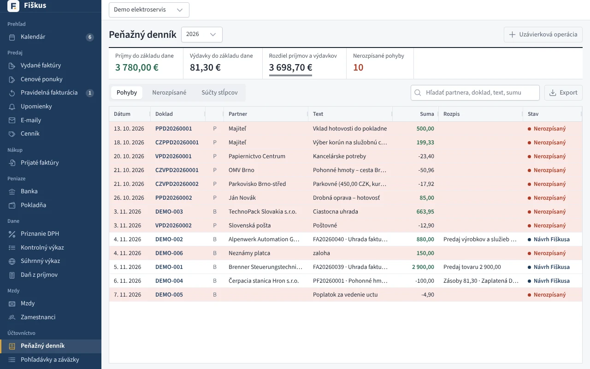
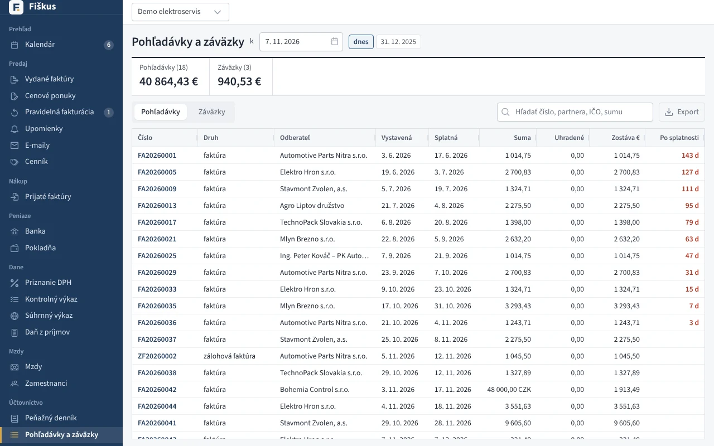
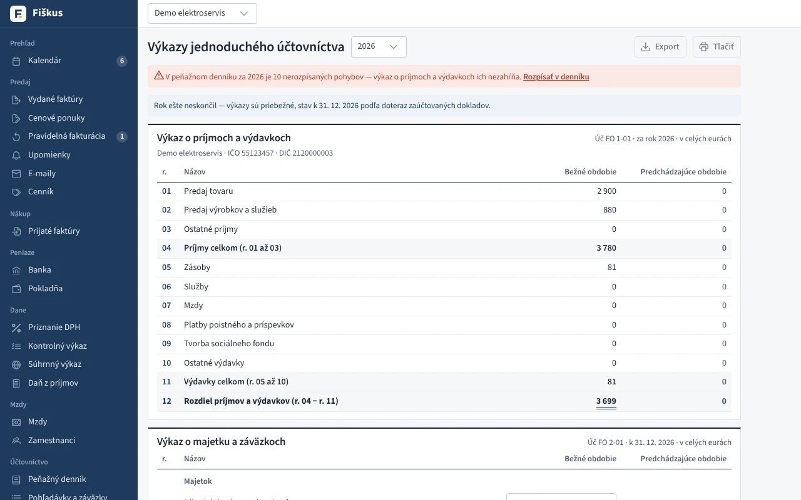
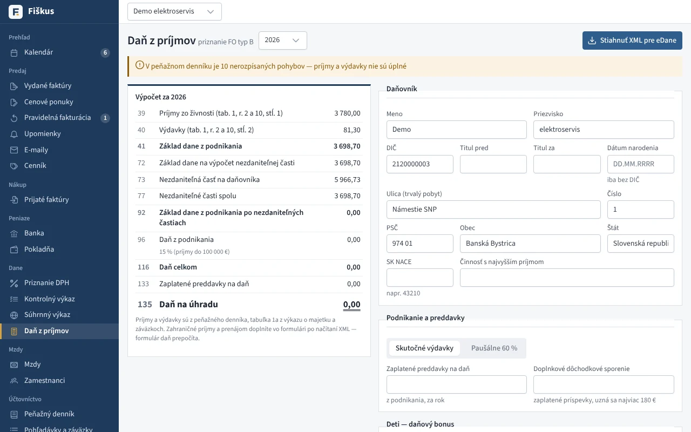

Jednoduché účtovníctvo¶
Peňažný denník¶
Peňažný denník je v štruktúre opatrenia MF SR č. MF/27076/2007-74 (§ 4): stĺpce c, d1–d3 (príjmy), e1–e6 (výdavky), f a g. Riadky vznikajú z bankových výpisov a pokladne.


| Pohyb | Kto ho rozpíše do stĺpcov |
|---|---|
| úhrada spárovanej faktúry | Fiškus — základ podľa druhu plnenia alebo výdavku, DPH zvlášť, pomerne pri čiastočnej úhrade |
| iný pohyb (poplatok, vklad, odvody) | vy, s rýchlymi voľbami |
Pod denníkom sú súčty stĺpcov a rozdiel príjmov a výdavkov.
Prečo sa DPH píše zvlášť
Platiteľ DPH daň z prijatej platby neodvádza zo svojho príjmu — odvádza ju štátu. Preto patrí do stĺpcov „príjmy/výdavky nezahŕňané do základu dane“ a výsledok hospodárenia sa počíta bez nej.
Knihy a výkazy¶




- Stavy pokladnice a účtov, kniha pohľadávok a záväzkov k ľubovoľnému dňu (úhrady po tom dni sa neberú).
- Výkaz o príjmoch a výdavkoch (Úč FO 1-01) a Výkaz o majetku a záväzkoch (Úč FO 2-01) v celých eurách, s predchádzajúcim obdobím.
- Uzávierkové operácie k 31. 12. — odpisy, zostatková cena predaného majetku, úpravy — bez vplyvu na stav peňazí.
- Podklady pre DP FO typ B — VI. oddiel, tabuľky 1 a 1a.
Uzávierka roka¶
Vo Výkazoch (závierka) pri minulom roku je panel Uzávierka roka. Fiškus pred uzávierkou skontroluje:
| Kontrola | Blokuje uzávierku |
|---|---|
| rok skončil | áno |
| všetky pohyby v peňažnom denníku sú rozpísané | áno |
| zadané riadky výkazu (zásoby po inventúre, ceniny, úvery, rezervy) sú uložené | nie, upozorní |
| predchádzajúci rok je uzavretý | nie, upozorní |
| pokladnica nemá záporný zostatok | nie, upozorní |
Tlačidlo Uzavrieť rok:
- uloží súhrn (príjmy, výdavky, rozdiel) a konečné stavy pokladníc a účtov,
- prenesie konečné stavy bankových účtov ako počiatočné stavy ďalšieho roka (pokladnice nadväzujú samy z dokladov),
- uzamkne rok: pokladničné doklady, import a párovanie bankových pohybov, úhrady, vystavenie a úprava faktúr a prijatých faktúr, rozpis denníka, uzávierkové operácie a zadané riadky výkazu s dátumom v uzavretom roku sa už nedajú zmeniť. Pohyby z uzavretého roka sa pri importe výpisu vynechajú.
Ak treba v uzavretom roku niečo opraviť, rok otvoríte tlačidlom Otvoriť rok s uvedením dôvodu (zapíše sa do auditu aj do histórie uzávierky). Po oprave rok znova uzavriete — stavy účtov sa prenesú nanovo. Rok sa dá otvoriť, iba ak nasledujúci rok nie je uzavretý.
Tlačiť vytlačí účtovnú závierku (Úč FO 1-01 a Úč FO 2-01) s hlavičkou účtovnej jednotky a miestom na podpis. Účtovná závierka nie je prílohou daňového priznania — fyzická osoba ju ukladá do registra účtovných závierok v lehote na podanie priznania, elektronicky formulárom UZFOv14 na portáli finančnej správy.
Daňové priznanie typ B¶
Obrazovka Dane → Daň z príjmov zostaví priznanie živnostníka za rok:


| Odkiaľ | Čo |
|---|---|
| peňažný denník | príjmy a výdavky zo živnosti (tabuľka č. 1), zaplatené poistné |
| výkaz o majetku a záväzkoch | tabuľka č. 1a (začiatok a koniec roka) |
| zadáte vy | osobné údaje, SK NACE, skutočné alebo paušálne výdavky, preddavky, zamestnanie, DDS, deti, manžel/ka, straty z minulých rokov, 2 % / 3 %, IBAN, počet príloh |
| vypočíta Fiškus | odpočet strát, nezdaniteľné časti (aj na manžela/ku), daň 15 % (príjmy do 100 000 €) alebo 19 – 35 %, daňový bonus na deti, daň na úhradu, preplatok alebo bonus na vyplatenie |
Deti. Pri každom dieťati zadáte meno a rodné číslo; vek Fiškus určí z rodného čísla. Bonus je 100 € mesačne do mesiaca, v ktorom dieťa dovŕši 15 rokov, potom 50 € do mesiaca dovŕšenia 18 rokov. Ak dieťa nežilo v domácnosti celý rok, vyberiete mesiace. Bonus sa znižuje o 1/10 sumy, o ktorú základ dane prevyšuje hranicu (25 740 € za 2025, 27 432 € za 2026), a spolu je najviac 29 – 64 % základu podľa počtu detí. Bonus vyšší ako daň vám finančná správa vyplatí — na IBAN alebo poštovou poukážkou.
Manžel/ka. Nezdaniteľnú časť uplatníte, ak manžel/ka žil/a s vami v domácnosti a spĺňal/a niektorú zo zákonných podmienok (starostlivosť o malé dieťa, opatrovanie, evidencia na úrade práce, zdravotné postihnutie). Zadáte vlastný príjem manžela/ky a počet mesiacov.
Straty. Stratu z priznaní za posledných 5 rokov zadáte s tým, čo ste z nej už odpočítali. Fiškus ju odpočíta od najstaršej — mikrodaňovník (príjmy do 100 000 €) až do výšky základu, inak najviac polovicu; stratu za rok 2020 najviac do polovice základu.
Stiahnuť XML pre eDane vytvorí súbor v štruktúre formulára DPFOB. Načítate ho vo formulári na portáli finančnej správy (Načítať zo súboru) a formulár priznanie skontroluje. Zahraničné príjmy, prenájom a bonus na úroky z hypotéky doplníte priamo vo formulári.
Prečo sa daň z podnikania počíta zvlášť
Základ dane z podnikania sa pri príjmoch do 100 000 € zdaňuje sadzbou 15 %, kým základ zo zamestnania progresívne. Nezdaniteľná časť sa preto najprv odpočíta zo zamestnania a iba zvyšok zo živnosti (riadky 91 a 92) — inak by daňovník prišiel o časť úľavy.